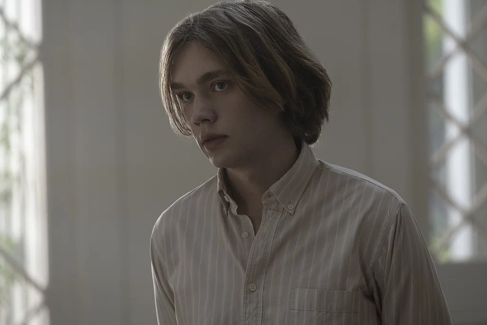
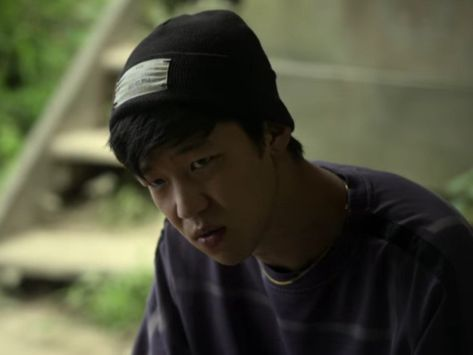

В поисках Аляски
«Знаешь, мне до сих пор кажется, что единственная возможность вырваться — это быстро и по прямой, но я пока все же предпочту походить по лабиринту. Тут отстойно, но это мой выбор.»
Главные герои

Майлз Холтер «Толстячок»
Главный герой романа, Майлз, — новичок в подготовительной школе Калвер-Крик, увлекающийся запоминанием последних слов известных людей. Его друг и сосед по комнате, Полковник, ласково называет Майлза Толстячком, несмотря на то, что тот высокий и худощавый. Майлз влюбляется в девушку по имени Аляска, пока ищет «Великое Возможно».

Аляска Янг
Подруга и возлюбленная Майлза, загадочна и притягательна. Она любит пить вино, собирать книги на гаражных распродажах и вместе с Полковником разыгрывать богатых студентов Калвер-Крика. Дикая и непредсказуемая, Аляска может в одно мгновение сменить настроение, ведь она до сих пор переживает смерть матери.
Чип Мартин «Полковник»
Сосед Майлза по комнате и его доверенное лицо. Полковник — волевой гений, который любит подшучивать над богатыми студентами Калвер-Крика.

Такуми Хикохито
Мастер фейерверков и розыгрышей. Тихий, но незаменимый член команды. Верный друг, который всегда поддержит в трудную минуту.

Лара Бутерская
Румынская студентка из Калвер-Крик, Лара — подруга и бывшая девушка Майлза.

Доктор Хайд
Старший преподаватель Майлза по предмету «Мировые религии», доктор Хайд увлечён преподаванием и ведёт занятия в своей бескомпромиссной манере. Он выступает духовным наставником для главных героев — Майлза Холтера и Аляски Янг.

Мистер Старнс «Орел»
Ученики Калвер-Крика прозвали мистера Старнса, старосту школы, Орлом. Он часто становится объектом розыгрышей и известен своей суровостью и тем, что на Аляске называют «мрачным взглядом».
«Как вы выберетесь из этого лабиринта страданий?»
Путеводитель по сериям
Каждая серия — шаг к истине и Великому Возможно.
1. «Знаменитые последние слова»16‑летний Майлз Холтер, увлечённый предсмертными высказываниями известных людей, покидает дом с фразой Франсуа Рабле «Я иду искать Великое Возможно» и поступает в школу‑интернат. Он знакомится с новыми друзьями — Чипом («Полковником») и Такуми, а затем встречает загадочную и харизматичную Аляску Янг, которая сразу привлекает его внимание.
2. «Скажи им, что я что-то сказал...»Майлз постепенно вливается в школьную жизнь. Он участвует в розыгрышах, которые устраивают его новые друзья, и всё больше влюбляется в Аляску. Между тем, отношения внутри компании осложняются из‑за прошлых обид и недоговорённостей.
3. «Я никогда не чувствовал себя лучше...»Компания друзей устраивает очередную шалость против «Волков» — группы богатых учеников. Майлз всё ближе сходится с Аляской, но замечает, что она временами погружается в глубокую грусть и хранит какие‑то тайны. Её поведение становится всё более противоречивым.
4. «Еда очень вкусная»Друзья сталкиваются с последствиями своих розыгрышей. Аляска пытается справиться с внутренними переживаниями, а Майлз старается понять, что её тревожит. В отношениях между героями нарастает напряжение, но они стараются сохранить дружбу.
5. «Я покажу вам, что это не выстрелит»Аляска делится с Майлзом своими страхами и воспоминаниями. Друзья планируют новый розыгрыш, но он оборачивается неожиданными последствиями. Майлз начинает осознавать, что у каждого из его новых знакомых есть свои «тёмные стороны» и непростые истории.
6. «Мы все уходим»Напряжение в школе нарастает. Аляска всё чаще говорит о смерти и о том, как сложно жить с грузом прошлого. Майлз, Полковник и Такуми пытаются поддержать её, но не до конца понимают, что происходит в её душе. Намечается крупный розыгрыш, который должен стать кульминацией их противостояния с «Волками».
7. «Теперь начинается загадка»Происходит трагедия: Аляска погибает в автокатастрофе. Майлз, Полковник и Такуми шокированы и не могут смириться с потерей. Они начинают собственное расследование, пытаясь понять, было ли это случайностью или чем‑то большим. Вопросы множатся, а ответы ускользают.
8. «Там очень красиво»Друзья пытаются найти ответы на мучающие их вопросы. Они анализируют последние слова и поступки Аляски, вспоминают её рассказы и пытаются сложить воедино картину произошедшего. Майлз приходит к пониманию, что жизнь и смерть — это сложные темы, на которые нет простых ответов, но память об Аляске останется с ним навсегда.
«Мы со временем понимаем, что родители не могут ни сами спастись, ни спасти нас, что всех, кто попал в реку времени, рано или поздно подводным течением выносит в море, то есть, короче говоря, мы все уходим.»
Актёры и их персонажи
Чарли ПламмерМайлз Холтер
Софья ВасильеваЛара Бутерская
Рон Сепас ДжонсДоктор Хайд
Тимоти С. СаймонсМистер Старнс
«Иногда думаю о том, что загробную жизнь люди придумали лишь для того, чтобы облегчить себе боль потери и чтобы время, проведенное в лабиринте, казалось хоть сколько-то сносным.»
Галерея кадров
«Ты живёшь, как будто в лабиринте застрял, думаешь о том, как однажды из него выберешься и как это будет прекрасно, и живёшь именно этим воображением будущего, но оно никогда не наступает. Ты думаешь о будущем, чтобы сбежать из настоящего.»